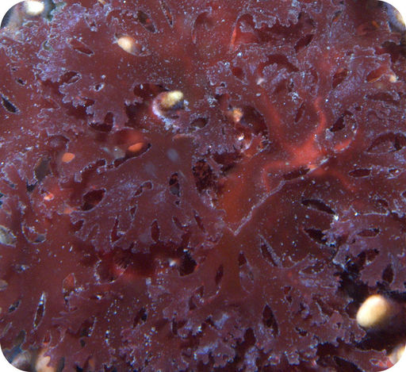
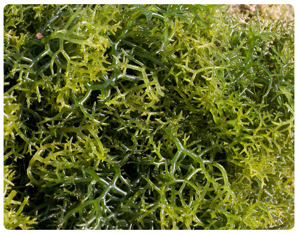
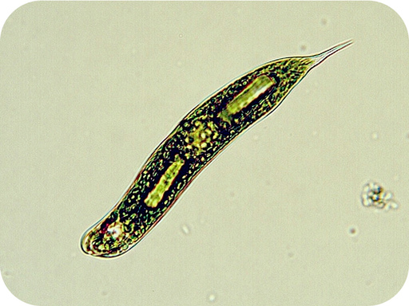
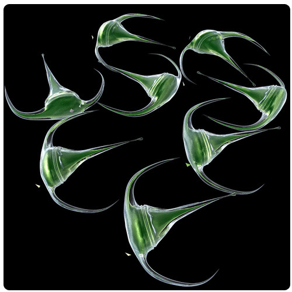

| Type of Algae | Origin of Chloroplast | Type of Chloroplast |
|---|---|---|
|
Red algae  |
cyanobacteria | two membranes, chlorophyll like the majority of cyanobacteria |
|
Green algae  |
cyanobacteria | two membranes, chlorophyll like a minority of cyanobacteria |
|
Euglenids  |
green algae | three membranes, chlorophyll like green algae |
|
Dinoflagellates  |
red algae | three membranes, chlorophyll like red algae |